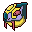
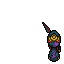
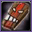
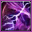
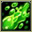
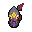

Pokédex / #336

Seviper #336
Poison
In battle, it uses its bladed tail to counter any Zangoose. It secretes a deadly venom in its tail.
Generation 3 · Hoenn

Stats
| Attack | 100 | |
|---|---|---|
| Defense | 60 | |
| Sp. Atk | 100 | |
| Sp. Def | 60 |
In the wild
| Wild level | 40–50 |
|---|---|
| HP | 73 |
| Experience | 10 |
| Egg groups | Field, Dragon |
Evolution
- Does not evolve.
Moves
| Level | Move | Type | Category | Power | Energy | Cooldown | Effect | |
|---|---|---|---|---|---|---|---|---|
| 1 | Tackle | Normal | Physical | 15 | 15 | 1s | Tackle is one of the most common and basic moves a Pokemon learns. It deals damage with no additional effects. | |
| 1 | Wrap | Normal | Physical | 35 | 45 | 13s | Wrap deals damage and lower the Speed of the target by two stages. | |
| 4 | Bite | Dark | Physical | 60 | 60 | 9s | Bite deals damage and has a 30% chance of causing the target to flinch. | |
| 6 |  | Lick | Ghost | Physical | 30 | 30 | 5s | Lick deals damage and has a 30% chance of paralyzing the target. |
| 9 | Poison Tail | Poison | Physical | 50 | 55 | 9s | Poison Tail deals damage and has an increased critical hit ratio. It has a 10% chance of poisoning the target. | |
| 11 | Feint | Normal | Physical | 30 | 30 | 5s | Feint hits through moves such as Protect or Detect and lifts their effect. It has a short cooldown. | |
| 14 | Screech | Normal | Status | – | 100 | 35s | Screech lowers the target's Defense by two stages. | |
| 16 |  | Venoshock | Poison | Special | 65 | 75 | 16s | Venoshock inflicts damage and its power will double to 130 when the target is poisoned. |
| 19 |  | Glare | Normal | Status | – | 15 | 13s | Glare paralyzes the target. |
| 21 | Poison Fang | Poison | Physical | 50 | 55 | 8s | Poison Fang inflicts damage and has a 30% chance of badly poisoning the target. | |
| 24 | Venom Drench | Poison | Status | – | 50 | 30s | Opposing Pokemon are drenched in an odd poisonous liquid. This lowers the Attack, Sp. Atk, and Speed stats of a poisoned target. | |
| 26 | Night Slash | Dark | Physical | 70 | 70 | 11s | Night Slash deals damage and has an increased critical hit ratio. | |
| 29 | Gastro Acid | Poison | Status | – | 120 | 90s | The user hurls up its stomach acids on the target. The fluid eliminates the effect of the target's Ability. | |
| 31 | Poison Jab | Poison | Physical | 80 | 80 | 12s | Poison Jab inflicts damage and has a 30% chance of poisoning the target. | |
| 34 | Haze | Ice | Status | – | 100 | 120s | Resets all stat changes. | |
| 36 | Swords Dance | Normal | Status | – | 100 | 60s | Swords Dance raises the user's Attack by two stages. | |
| 39 | Crunch | Dark | Physical | 80 | 80 | 12s | Crunch deals damage and has a 20% chance of lowering the target's Defense by one stage. | |
| 41 | Belch | Poison | Special | 60 | 60 | 13s | The user lets out a damaging belch at the target. | |
| 44 | Coil | Poison | Status | – | 70 | 60s | Coil raises the user's Attack, Defense by by one stage each and clear Accuracy . | |
| 46 | Wring Out | Normal | Special | 120 | 90 | 18s | The power of Wring Out varies between 1 and 120 depending on how much HP the opponent has. The more HP the opponent has, the more damage this move will do. Its damage is calculated by the following formula: Base Power = 120 x (Opponent's Current HP/Opponent's Maximum HP) |
Field abilities
StrengthRock Smash
Special abilities
Shed Skin
Egg moves
AssuranceBody SlamFinal GambitIron TailPunishmentScary Face
Technical machines
Double TeamEarthquakeFlamethrowerPoison JabProtectRain DanceRestSludge BombSubstituteTauntToxic
Drops
| Item | Amount | Chance | |
|---|---|---|---|
| bottle of poison | 1–13 | 97.2% | |
| tooth | 1 | 97.2% | |
| venom pendant | 1 | 87.5% | |
| cutting fang | 1 | 17.5% | |
| insect skin | 1 | 8.33% | |
 | seviper doll | 1 | 0.1% |
| Toxic Plate | 1 | 0.05% | |
| held poison barb | 1 | 0.01% |